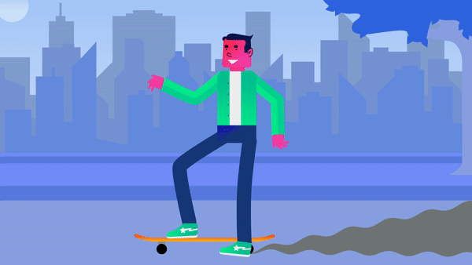
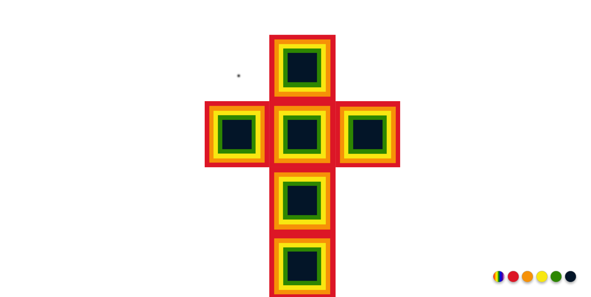
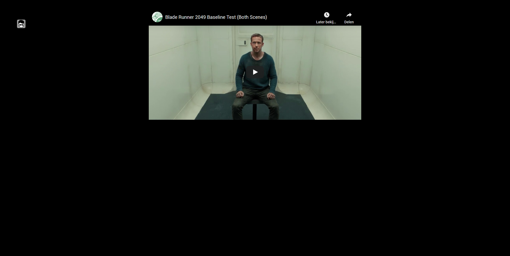
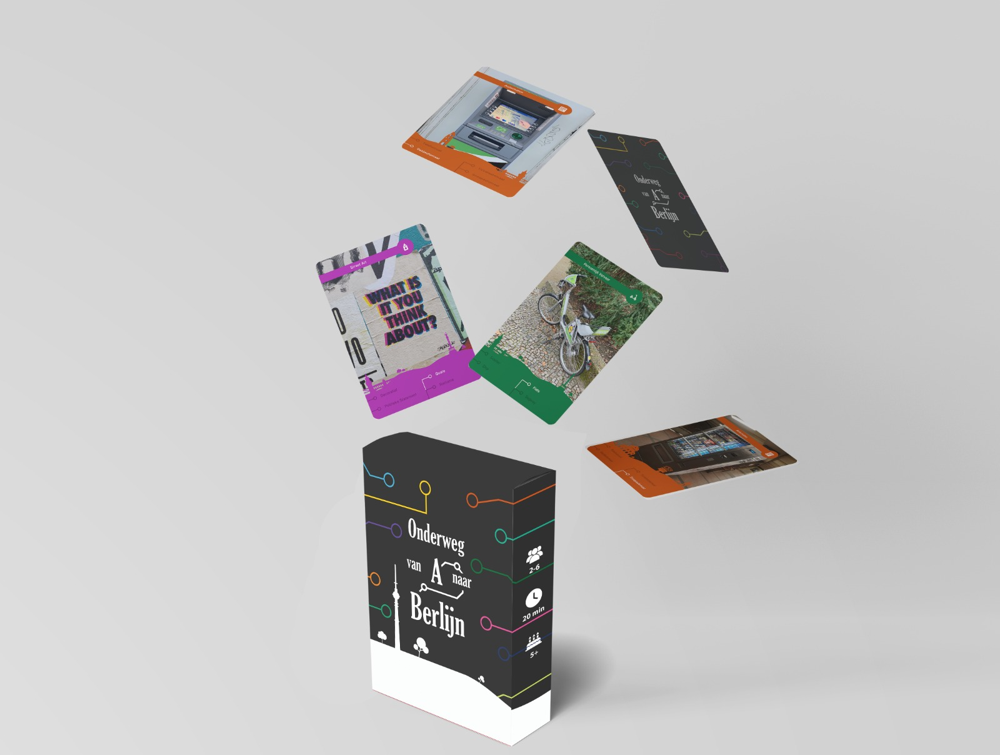
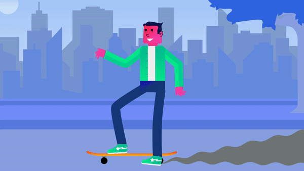
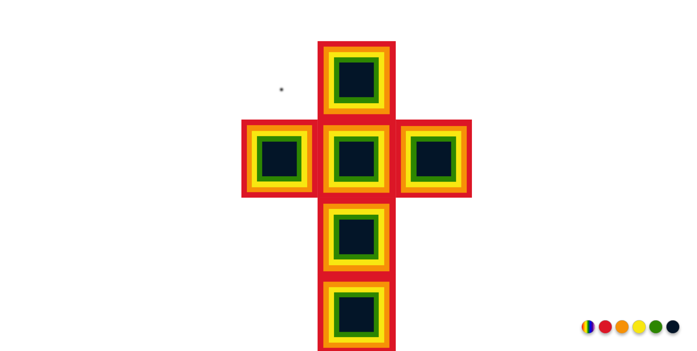
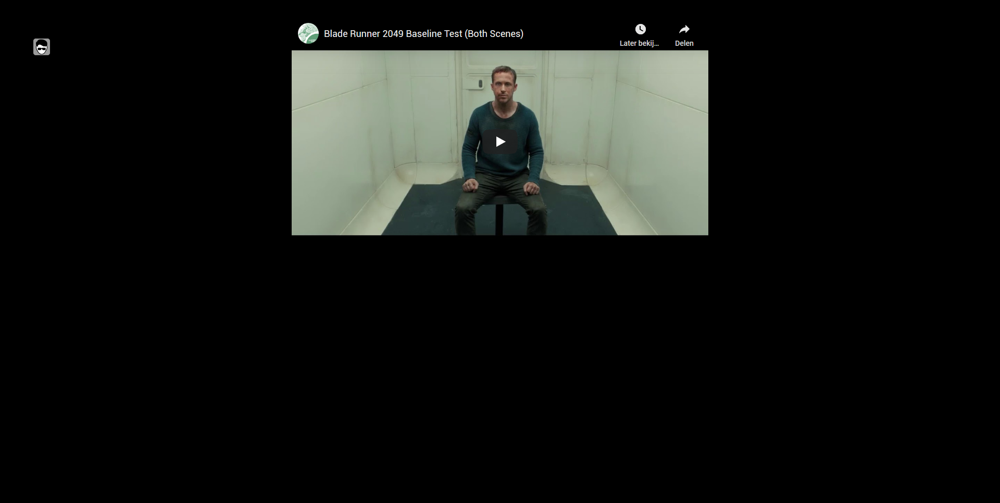
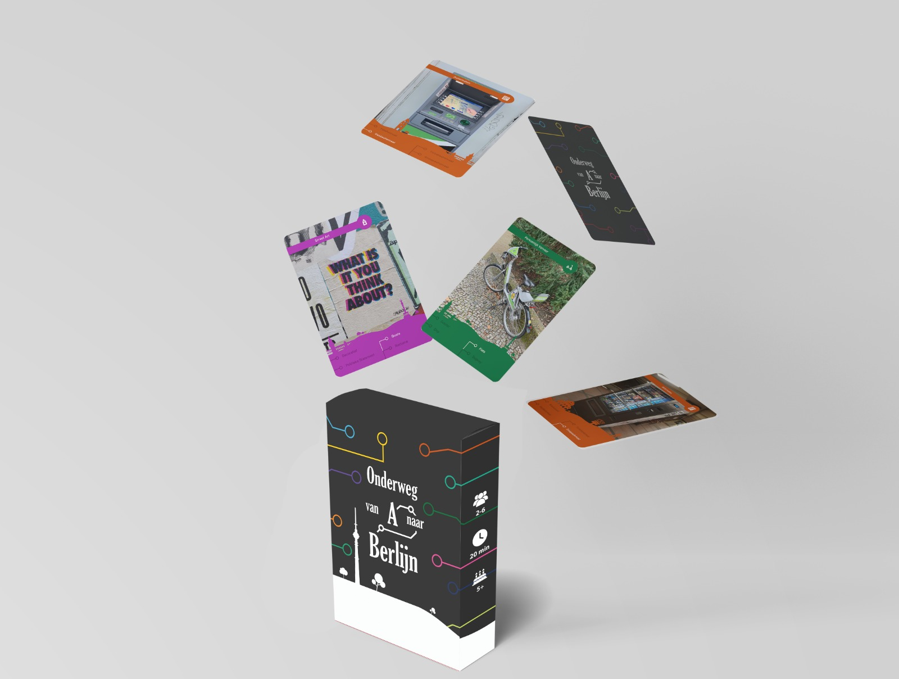
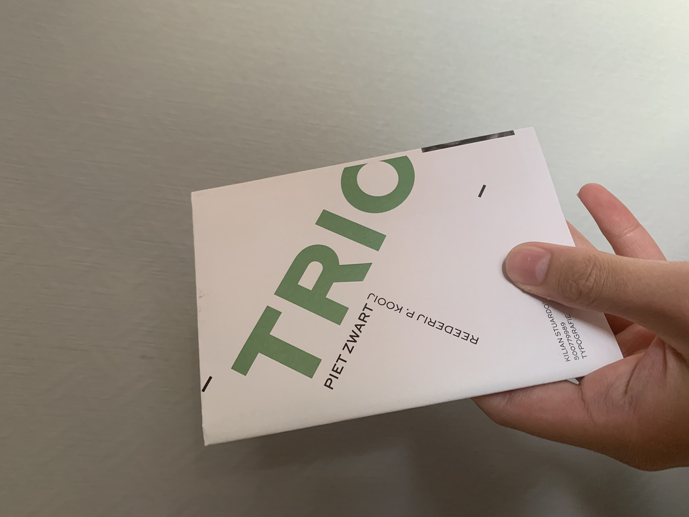
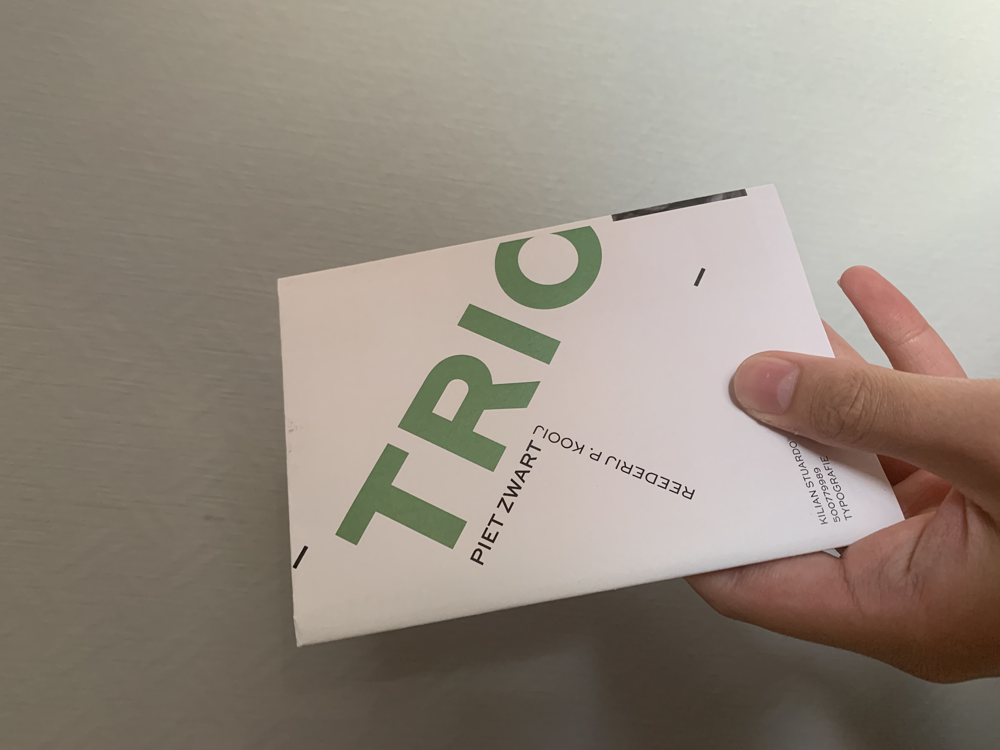

- Minor Visual Interface Design Hva
In de minor heb ik veel geleerd en ben ik gegroeid als designer. Ik heb mezelf beter leren kennen en ik ben nu meer confident in wat ik doe en hoe mijn proces uniek is aan die van iemand anders.Ik begin echt meer mijn eigen voetafdruk te zien en weet nu hoe ik voor mezelf mijn creatief proces kan kickstarten en hoe ik het doorga. De vakken waren allemaal erg interessant. Ik heb het gevoel dat ik er echt wat aan gehad heb, en dat ik meer geleerd heb en mezelf beter heb leren kennen als designer. Ook deze hele corona toestand heeft toch op een manier geholpen ook doordat we geforceerd thuis moesten werken.
Web Typografie
Web Animatie
Kleur & Grid
Meesterproef

 







 
